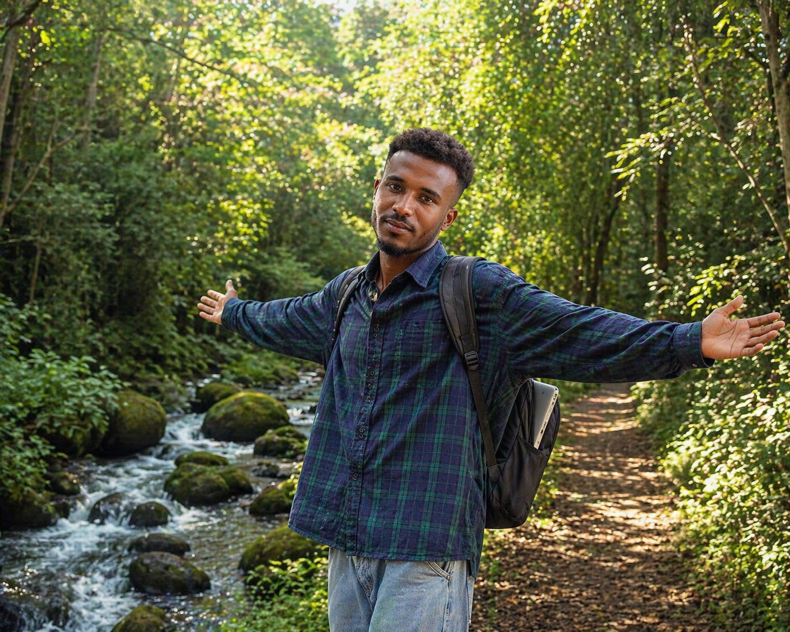

Machine Learning
Model training, optimization, evaluation, and learning from data.
THE PERSON BEHIND THE CODE
A student, builder, and curious learner exploring how software and AI can solve meaningful problems.

Based in Debre Markos, Ethiopia
I'm a fourth-year Software Engineering student at Debre Markos University, expecting to graduate in 2028. I am developing my programming, software development, and machine learning skills through structured study and hands-on projects.
My current learning focuses on supervised machine learning, data preparation and evaluation, neural-network fundamentals, computer vision, and natural-language technologies. I want to grow into an AI/ML engineer who builds practical tools, especially technologies that support Ethiopian languages and local needs.
RESEARCH & LEARNING INTERESTS
Model training, optimization, evaluation, and learning from data.
Image classification, activity recognition, and CNN fundamentals.
NLP, translation, speech recognition, and text-to-speech concepts.